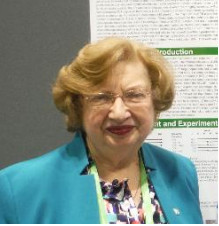
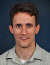

Julia H. Carter, Ph.D. President and Sr. Staff Scientist
Anthony B. DeAngelo, Ph.D. Collaborating Senior Scientist
Larry E. Douglass, M.D. Director of Pathology
James A. Deddens, Ph.D. Biostatistical Consultant
Diane W. Fritz, M.S. Visiting Staff Scientist and Education Consultant
Jeremy R. Graff, Ph.D. Collaborating Scientist
Ronald D. Snyder, Ph.D. Collaborating Scientist
Zachary Taylor, Ph.D. Visiting Scientist and Collaborator
Elyse Hawkins, B.A. Tissue Bank Manager
Denise Lucas, HT/ASCP Histologist
Sharon Bresser, Bookkeeper
Carole Ewald, Admin. Assistant
Georgia Kinman, Director of Development
Bill Meader, Facilities Manager
The Wood Hudson Officers and Board of Trustees govern the not-for-profit, publicly supported organization. The Trustees and Officers are ultimately responsible for Financial Planning, Legal Matters, Evaluating and Recruiting Research Scientists and Research Collaboration, Fund Raising, Facilities, Audits and Strategic Planning. We thank this group of civic minded individuals for donating their time and talents to Wood Hudson Cancer Research Laboratory.
President and Chairman
Scientific Affairs Committee
Scientific Affairs Committee
Chairman of Scientific Affairs Committee
Scientific Affairs Committee
Vice-Chairman of Scientific Affairs Committee
Treasurer, Chairman of Finance Committee
Vice Chairman of Finance Committee
Chairman of Public Affairs Committee
Chairman of Endowment and Development Committees
Secretary, Chairman of Legal Affairs Committee
Development Committee
Scientific Affairs Committee